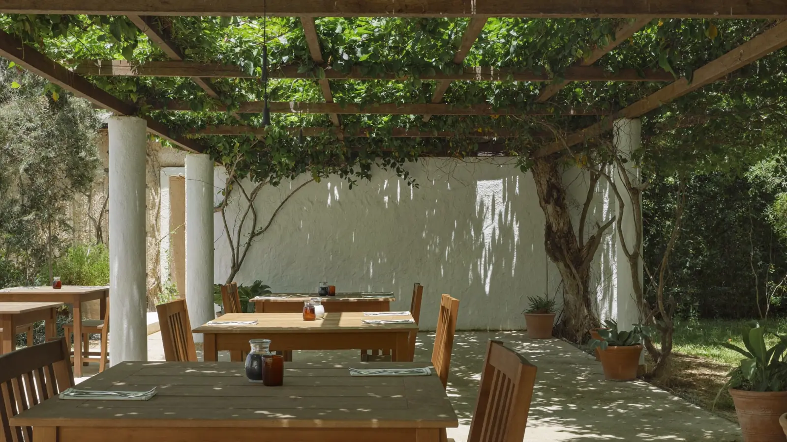
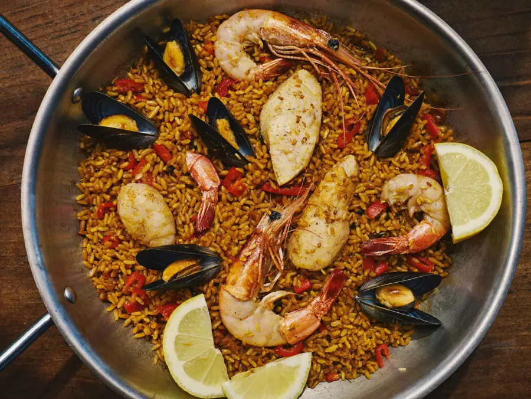
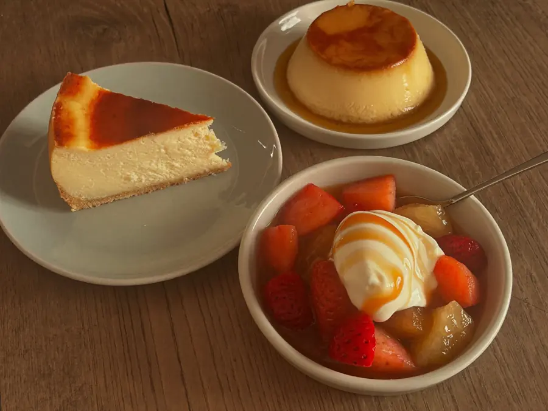

Carrer Sant Sebastià · Sant Pere Pescador
Carta variada, arroces que llenan, mar y montaña, y postres hechos en casa. Con una terraza donde nadie te mete prisa.

La casa
Ca la Teresa está en el Carrer Sant Sebastià, 26, en Sant Pere Pescador. Es una casa de carta larga: hay para elegir de verdad, y las raciones se notan.
Lo que más se repite en las opiniones son tres cosas juntas: la relación calidad-precio, que los precios no son de los que asustan, y que el servicio está encima sin agobiar. Y los postres caseros, que en una carta larga son la parte que casi todo el mundo abandona.
Cocina

Contundentes, de los que no hacen falta dos platos.

Hechos en casa. De lo que más se cita cuando alguien habla de aquí.
La terraza
La terraza es tranquila, y eso en verano en el Alt Empordà no abunda: aquí no se come con el ruido de la carretera ni con la mesa de al lado encima. Es de esas cosas que no salen en una ficha de directorio y que deciden dónde se queda la gente.
Cómo llegar
En el Carrer Sant Sebastià, 26, en Sant Pere Pescador.
Llamar ahora Abrir en MapsPreguntas frecuentes
Sí, y es tranquila — de lo que más destacan los clientes.
Sí, hechos en casa. Es una de las cosas más citadas de la carta.
No. Lo que más repiten es que los precios están contenidos para lo que se sirve.
La carta es larga: arroces, mar y montaña y platos de siempre.
En el Carrer Sant Sebastià, 26, en Sant Pere Pescador.